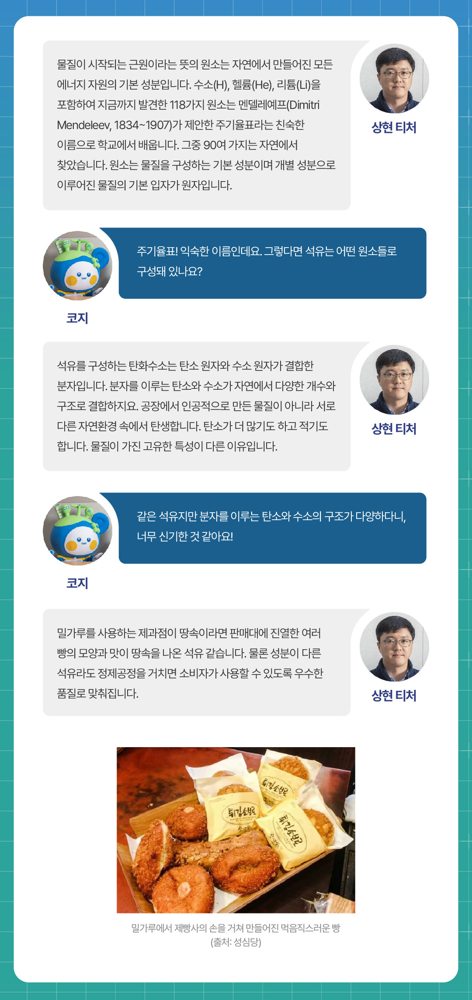
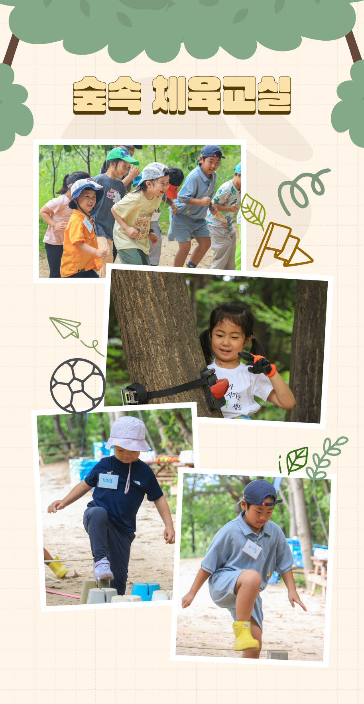
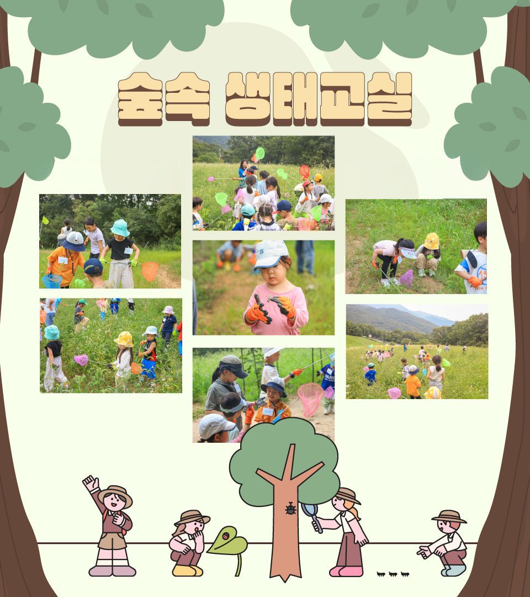
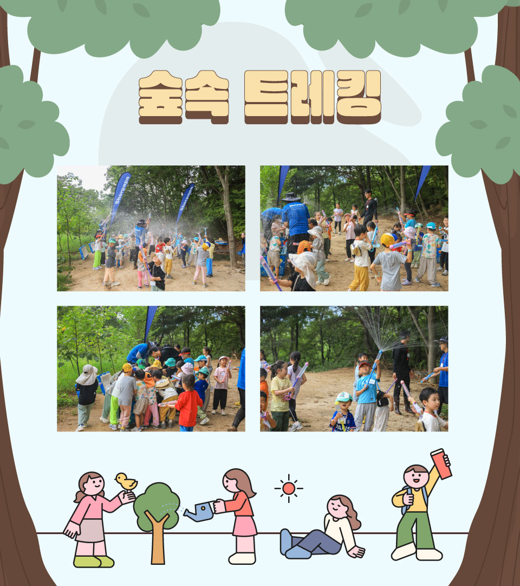

숲을 사랑하는 꼬마 대원들이 다른 외부인은 출입 불가 지역인 가지산도립공원에 모였다. 공사 구성원 자녀 22명이 바로 그 주인공. 엄마, 아빠와 약 4시간 정도 분리되어 씩씩하게 숲 체험에 참여한 꼬마 대원들은 대자연 속에서 아무 걱정 없이 신나게 뛰어놀았다. 해맑게 웃는 아이들의 순수한 모습을 그대로 담아 보았다.

영남알프스에서 자연과 가까워지고 자연을 탐험하는 시간
자연과 가까워지고, 자연을 탐험하고, 자연 속에서 새로운 경험을 할
수 있는 프로그램에 공사 구성원 자녀 22명(4세~초등학교 저학년)이
꼬마 대원으로 참가했다. 울산 영남알프스 가지산도립공원 내 다른
외부인은 출입이 불가한 곳에서 진행됐는데, 엄마, 아빠와 헤어진
4시간 동안 아이들은 씩씩하게 자연 그리고 숲과 함께했다.
총 네 가지 테마로 기획된 이번 숲 체험은, 유니스트와 함께 연구하는
유쾌한 실험실 ‘숲속 실험실’, 전문
선생님과 함께하는 성장 발달 스포츠
‘숲속 체육교실’, 곤충 전문가와
함께하는 숲 탐방 ‘숲속 생태교실’,
도립공원에서 즐기는 계절놀이
‘숲속 트레킹’으로 구성됐다.
네 가지 숲속 프로그램, 4시간 동안의 흥미로운 체험
가장 먼저 아이들은 장화 수트로 갈아입고 실험실로 향했다. 아이들의 기대가 가장 높은 시간으로 과산화수소를 주재료로 하는 실험이 진행됐다. 강력한 산화제인 과산화수소와 칼륨 등을 통해 화학적 반응을 눈으로 보고, 직접 안전하게 실험 재료를 투입해보는 순간, ‘펑’ 하고 터지는 장면에 아이들은 환호하며 박수를 치고 흥미로워하는 모습들이었다.

그다음으로 아이들을 기다리고 있는 곳은 체육교실이었다. 장애물 넘기와 나무 오르기 등을 통해 체력을 다지는 시간을 가졌는데, 키가 작거나 높은 곳을 무서워하는 아이들은 다른 아이들의 응원을 받아 용기를 내어 도전하기도 했다. 또 함께 릴레이로 달리며 협동심을 키우는 시간도 가졌다. 체육 활동을 마친 아이들은 한쪽에 떨어져 있던 밤송이를 발로 직접 까며 꽤 많은 양의 밤을 모으기도 했다.

맛있는 점심을 먹고, 아이들은 자신들의 키보다 훨씬 큰 풀이 무성한 숲으로 들어가 직접 곤충 채집에 나섰다. 평소 집 근처에서 잠자리나 메뚜기 정도를 잡는 것으로 만족했던 아이들은 처음 마주하는 신기한 곤충들을 직접 채집하고 관찰하며 좀처럼 흥분을 가라앉히지 못했다. “집으로 가져갈 거야?”라는 물음에 아이들은 “안 돼요, 집으로 돌려줘야 해요.”라며 순수한 웃음을 보여줬다.

마지막으로는 가을 오솔길을 걸으며 사진도 찍고 큰 소리로 힘껏 ‘야호’를 외치며 즐겁게 숲 체험 프로그램을 마무리했다. 4시간 만에 만난 엄마 아빠에게 달려가 포옹하며 “보고 싶었어요”, “여기서 더 놀고 싶어요”라며 애교 섞인 표정을 짓기도 했다.

부모의 손을 잠시 놓고 호기롭게 숲 체험에 나섰던 22명의 꼬마 대원들은 모든 미션을 멋지게 완수한 채 씩씩하게 집으로 돌아갔다. 그날 밤, 아이들의 꿈속에는 또 어떤 아름다운 숲의 풍경이 펼쳐졌을까. 작은 모험을 끝낸 아이들의 이번 숲 체험은 웃음과 추억을 선물하며 아름답게 마무리되었다.